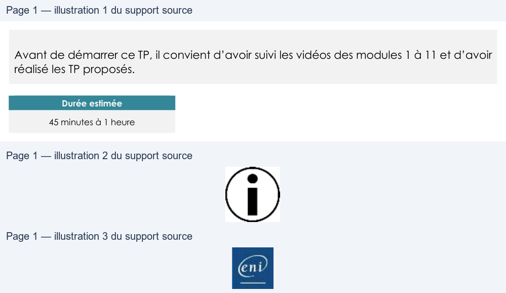

Transcription du document du Drive TSSR. La mise en forme est adaptée au Web ; les compléments IA du portail sont présentés séparément.
Administration Debian GNU/Linux
TP du Module 11 – Droits sur les fichiers et répertoires
Avant de démarrer ce TP, il convient d’avoir suivi les vidéos des modules 1 à 11 et d’avoir
réalisé les TP proposés.
Durée estimée
45 minutes à 1 heure
Créer une structure de stockage sur le serveur sans interface
graphique pour les fichiers utilisateurs.
Trouver les solutions pour les besoins suivants :
•
Public : un répertoire public accessible en lecture / écriture pour tous les utilisateurs
•
Dépôt : un répertoire depot accessible en lecture / écriture pour tous les utilisateurs
mais dans lequel seul le propriétaire du fichier pourra le supprimer
•
Admin : un répertoire admin accessible en lecture / écriture pour le groupe admin
uniquement
•
Documentation : un répertoire documentation accessible en lecture pour tous les
utilisateurs et en lecture/écriture pour le groupe documentation.
Faire en sorte que tout nouveau fichier créé dans ce répertoire appartienne au
groupe documentation
Vous aurez besoin de configurer les droits spéciaux pour certains des répertoires.
Faites-en sorte que l’arborescence créée soit pertinente d’un point de vue FHS.
Tester les paramétrages avec les différents types de comptes utilisateurs
(administrateur, utilisateur, gestionnaire de la documentation ...).
Une solution est proposée pour ce TP sous la forme d'un PDF commenté, disponible dans les
ressources à télécharger.
Page 1/1
© ENI – Tous droits réservés
BE
